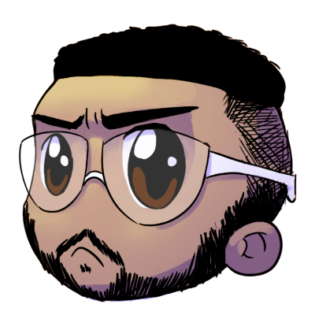

- Home
- >
- Sobre
Currículo
Dados Pessoais

Nome:
Leonardo Dantas
Nascimento:
1998
Residência:
Americana - SP
Idiomas:
Português (Nativo)
Inglês (Básico)
Sobre Mim
Formado em Jogos Digitais pela Fatec Americana, com experiência como Analista de TI devido a carreira profissional e com desenvolvimento de jogos, devido a formação e complemento no tempo livre.
Na área de jogos, possuo maiores competências como Game Designer, onde possuo um maior foco e também na parte de produção, além da vivência com a Unity, seja criando leveis, menus ou até programando mecânicas mais básicas, sendo desenvolvidas e adquiridas em Game jams, projetos de graduação e projetos pessoais.
Já na área de TI, comecei como estágiario de Suporte na prefeitura, mudando para o KaBuM!, também como estágiario, onde trilhei até se tornar Pleno, posição na qual atuo hoje.
Recentemente venho estudando sobre UI/UX, tanto para projetos de jogos, quanto WEB ou Mobile.
Educação
2017-2020
Técnologo em Jogos Digitais - FATEC Americana
2014-2016
Técnico em informática integrado ao Ensino Médio - ETEC Rio Claro
Experiência de Trabalho
02/2020-Atualmente
Analista de Suporte de Sistemas Pl - KaBuM!
01/2019-02/2020
Analista de Suporte de Sistemas Jr - KaBuM!
08/2018-12/2018
Estagiário de TI - KaBuM!
08/2017-07/2018
Estagiário de TI - Prefeitura de Americana
← Voltar ao início